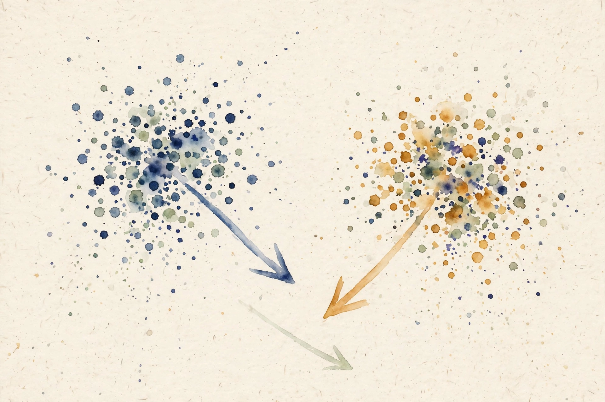

Narrated from the lesson document · no lecture transcript exists
No labels, only structure. This companion walks the full arc of Unit 09: k-means, distance and scaling, PCA, reconstruction, the factor-model bridge, and held-out evaluation. The EM and GMM leaves live in the U04c block.
From the lesson The idea, and every number beside it, comes from the cited section of the lesson file lessons/u09/lesson-09b-unsupervised-leaves.md. The phrasing is the companion's.
Illustration Invented by the companion: an analogy, a toy with made-up values, or a what-if. Never lesson content.
companion Companion voice: the idea above the tag is from the lesson. The generalization below it is the companion's.
Provenance: the lesson is locally authored. It does not reproduce an instructor lecture, and it carries no transcript. All claim classes are lesson-local. EM and mixture leaves are narrated in the U04 companion.

Section 1 · C01
From the lessonC01
Computed example, 2026-10-06. Iteration 0: assignments [0,0,0,1,1,1], J = 0.1700. New centers: (0.0333, 0.1) and (5.0333, 5.0). Iteration 1: same assignments, J = 0.133333. Iteration 2: unchanged. Converged. One claim: Lloyd moves centers to cluster means.
From the lessonC01
Bad start: both centers near the left group. J goes 145.17, then 9.03625, then 0.133333. The start changed the path, not the destination, on this toy. On harder data the destination changes too: restart.
From the lessonC01 Assignment bench: enter a point and two centers. The widget runs Lloyd's assignment rule.
x: y:
c1x: c1y:
c2x: c2y:
Rule: nearest center wins. Lesson centers above are the defaults.
J: 0.1700 to 0.133333 on a good start, 145.17 to 0.133333 on a bad one. Monotone, yet start-dependent.
Section 2 · C02
From the lessonC02
Computed example, 2026-10-06. Raw: nearest of A is B (index 1). After scaling y by 5: distances to B = 10.05, to C = 5.46. Nearest flips to C (index 2). After standardization: nearest returns to B (index 1). The one changed factor is the y scale. Distance is not a fact about the points. It is a fact about the ruler.
| Ruler | Nearest of A | dist to B | dist to C |
|---|---|---|---|
| raw | B (index 1) | not given | not given |
| y scaled by 5 | C (index 2) | 10.05 | 5.46 |
| standardized | B (index 1) | not given | not given |
Scale y by 5 and the nearest neighbor flips from B to C. Standardize and it flips back. The points never moved.
Section 3 · C03
From the lessonC03
Computed example, 2026-10-06. Eigenvalues 6.541656 and 0.018344. PC1 = [0.551163, 0.834398]. Variance explained by PC1: 6.541656 / 6.56 = 0.997204. One direction carrcarries 99.72 percent of the spread. The other is nearly noise.
From the lessonC03 Variance bench: enter two eigenvalues. The widget reports PC1's share with the lesson's ratio.
eig1: eig2:
Share = eig1 / (eig1 + eig2). Lesson: 0.997204.
Section 4 · C04
From the lessonC04
Computed example, 2026-10-06. Reconstruction MSE 0.009172. Dropped eigenvalue 0.018344 / d (d = 2) = 0.009172. Match to 1e-12. The identity is the invariant check: the error of dropping a direction equals that direction's share of the variance. U02's SVD lesson names the price. This is the receipt.
MSE 0.009172 equals 0.018344 / 2 to 1e-12. The reconstruction error is not estimated. It is known.
Section 5 · C09
From the lessonC09
Computed example, 2026-10-06. PCA k = 1 reconstruction MSE on all 3 dims: 1.278512. Noise floor mean (0.01 + 0.01 + 9)/3 = 3.006667. PCA eigenvalues: 7.330603, 3.826997, 0.008538. Note the second eigenvalue 3.83: PCA spends a whole direction on the noisy sensor. A factor model with per-dimension noise would spend its capacity on the signal direction instead.
From the lessonC09
PCA assumes equal noise everywhere. When one sensor is far noisier, that assumption misspends a direction. The factor view prices noise per dimension.
Second eigenvalue 3.83: a whole PCA direction spent on the noisy sensor. The method did its job. The assumption was wrong.
Section 6 · C12
From the lessonC12
Computed example, 2026-10-06. Train inertia: 7.6417, 0.3698, 0.3161, 0.1789. Held-out inertia: 14.1768, 0.4439, 0.3360, 0.2939. The drop from k = 1 to k = 2 is 13.73 on held-out, while from k = 2 to k = 5 only 0.15 more. Elbow at k = 2. Honest note: held-out keeps falling slowly past 2 on this easy data. The elbow, not a U-turn, is the verdict.
Held-out: 14.1768 to 0.4439 to 0.3360 to 0.2939. The 13.73 drop picks k = 2. The rest is noise.
Cluster by distance on standardized features, keep the high-variance directions, price the dropped energy, and validate k on held-out data.
Wisdom index